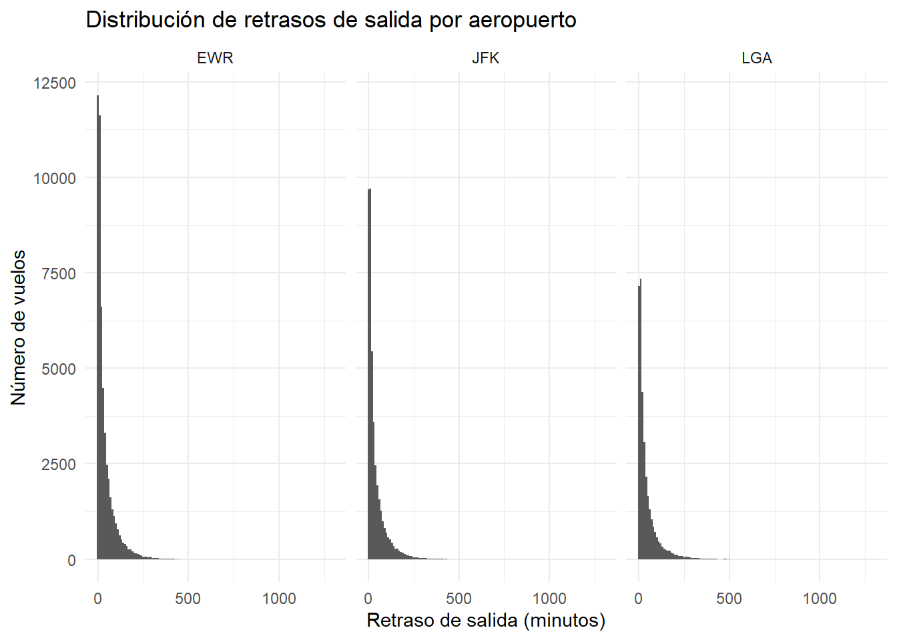
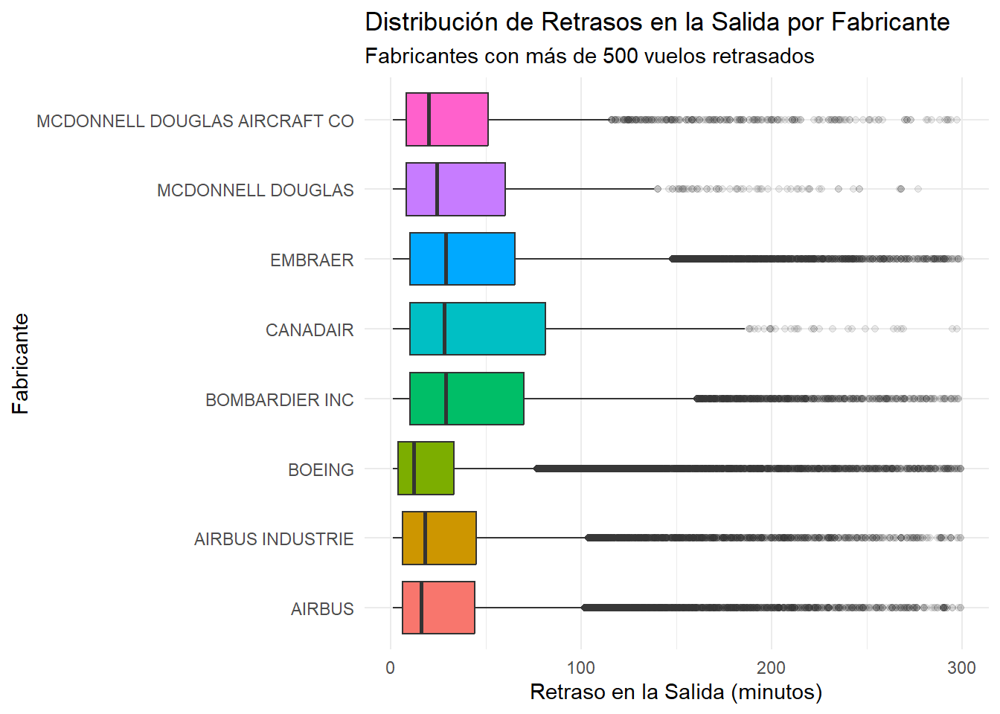
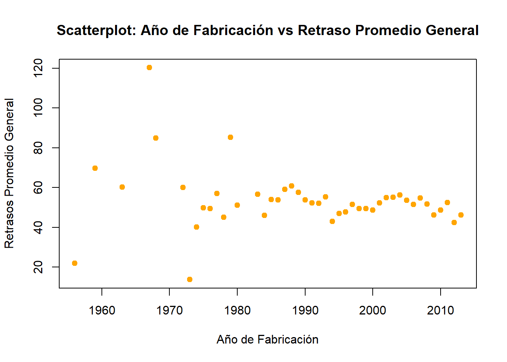
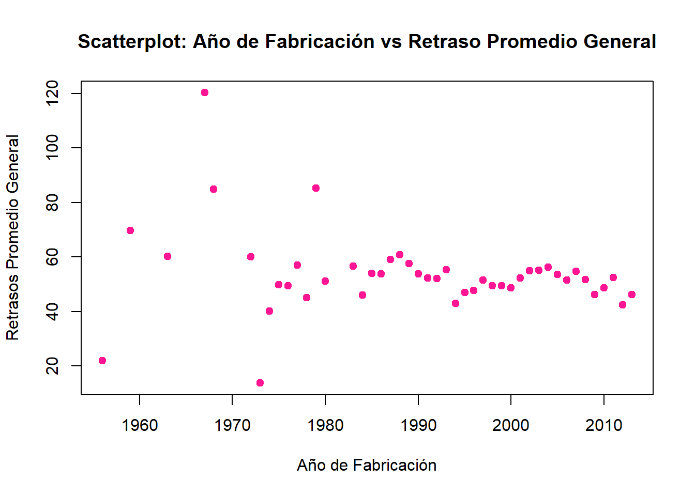
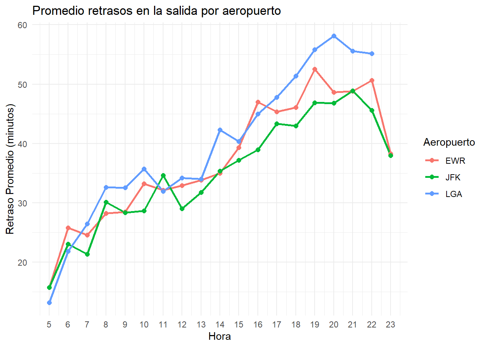
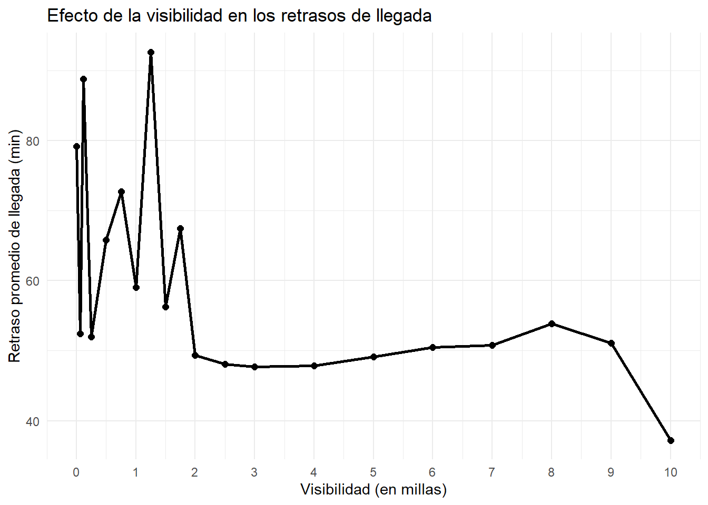
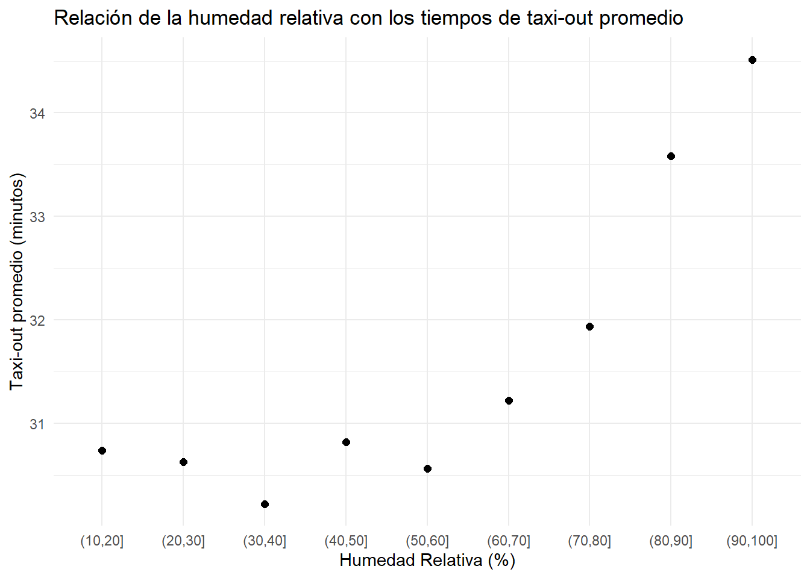

library(tidyverse) # dplyr, lubridate
library(DBI) # conexión entre R y sistemas de Bases de Datos
library(dbplyr) # convertir sintaxis SQL a dplyr y viceversa
library(RSQLite) # crear un mini sistema de bases de datos SQLite
library(ggplot2) # Permite crear gráficosPrimera parte - R: Vuelos de NYC
Instrucciones:
Utilizaremos las tablas de la base de datos vuelos.db que incluye información de:
- flights: Detalles de todos los vuelos que salieron de NYC (JFK, LGA, EWR) en 2013.
- airlines: Códigos y nombres de aerolíneas.
- airports: Información sobre aeropuertos, incluyendo ubicación.
- planes: Datos sobre aeronaves, incluyendo año de fabricación.
- weather: Datos meteorológicos por hora para los aeropuertos de NYC.
Responda las siguientes preguntas de 2 formas. Una utilizando verbos de {dplyr} y la otra con sintaxis SQL:
- ¿Qué aerolínea tuvo el mayor retraso promedio en la salida en 2013?
- ¿Qué día de la semana tuvo más vuelos retrasados en promedio?
- ¿Cuál es la distribución de los retrasos en la salida para cada aeropuerto?
- ¿Qué proporción de vuelos se retrasaron más de 30 minutos?
- ¿Qué destinos tuvieron los mayores retrasos promedio en la llegada?
- ¿Qué aerolíneas tuvieron el mayor número de vuelos desde NYC?
- ¿Cómo varía el retraso de los vuelos según el fabricante de la aeronave?
- ¿Los aviones más antiguos tienen más retrasos?
- ¿Qué modelos de aviones se utilizan con mayor frecuencia en vuelos desde NYC?
- ¿Cuál es la distancia promedio de vuelo por aerolínea?
- ¿Qué aeropuerto de NYC tuvo el mayor número de retrasos en la salida?
- ¿Qué aeropuerto tuvo el menor tiempo promedio de taxi-out?
- ¿Qué porcentaje de vuelos que salen de cada aeropuerto de NYC fueron puntuales?
- ¿Qué aeropuertos de destino tienen el mayor retraso promedio en la llegada para vuelos desde NYC?
- ¿Cómo varían los retrasos en la salida según la hora del día en cada aeropuerto de NYC?
- ¿Cuál es la correlación entre la velocidad del viento y los retrasos en la salida?
- ¿Los vuelos experimentan más retrasos en días con lluvias intensas?
- ¿Cómo afecta la temperatura a los retrasos de los vuelos?
- ¿Cómo afectan los niveles de visibilidad a los retrasos en la llegada?
- ¿La alta humedad se relaciona de alguna manera con los tiempos de taxi-out más largos?
Observaciones
Para la tabla de vuelos:
- dep_time, arr_time: Actual departure and arrival times
- sched_dep_time, sched_arr_time: Scheduled departure and arrival times
- dep_delay, arr_delay: Departure and arrival delays, in minutes. Negative times represent early departures/arrivals
- carrier: Two letter carrier abbreviation
- flight: Flight number
- tailnum: Plane tail number
- origin, dest: Origin and destination
- air_time: Amount of time spent in the air, in minutes.
- distance: Distance between airports, in miles.
- hour, minute: Time of scheduled departure broken into hour and minutes.
- time_hour: Scheduled date and hour of the flight as a POSIXct date.
- IMPORTANTE: Junto con origin, se puede usar
time_hourpara hacer join de los vuelos con las tablas de vuelos y clima.
“Taxi out” (o rodaje de salida en español) es el tiempo y el proceso en el que un avión se mueve desde la puerta de embarque (gate) hasta la pista de despegue. Incluye el rodaje, paradas y esperas antes de alzar el vuelo. Para esto, considérese las variables dep_delay y arr_delay
Librerías y datos
# Crear el tubo/conexión entre R y SQLite
# en particular con la DB vuelos.db
conn <- DBI::dbConnect(RSQLite::SQLite(), "../datos/vuelos.db")# Nombres de las tablas en la DB
dbListTables(conn)[1] "aerolineas" "aeropuertos" "aviones" "clima" "vuelos" Guardamos cada una de las tablas de la base de datos vuelos.db en frormato Dataframe de R
vuelos <- dbGetQuery(conn, "SELECT * FROM vuelos")
aerolineas <- dbGetQuery(conn, "SELECT * FROM aerolineas")
aeropuertos <- dbGetQuery(conn, "SELECT * FROM aeropuertos")
aviones <- dbGetQuery(conn, "SELECT * FROM aviones")
clima <- dbGetQuery(conn, "SELECT * FROM clima")1
¿Qué aerolínea tuvo el mayor retraso promedio en la salida en 2013?
Considerando que podemos identificar el nombre de cada aerolínea por su carrier en la tabla aerolineas, además de que en la tabla vuelos dep_delay indica el retraso en la salida en minutos (o la salida anticipada si dep_delay \(< 0\)) y que todos los registros de vuelos corresponden al año 2013, podemos contestar la pregunta 1 haciendo un INNER JOIN entre ambas tablas usando como llave carrier, es decir, conservando todos los registros con valores coincidentes en ambas tablas.
Luego, dado que nos interesa calcular el retraso promedio en la salida, excluimos las salidas anticipadas filtrando dep_delay \(> 0\), ya que incluirlas compensaría el promedio hacia abajo y distorsionaría la medida de retraso real. Posteriormente, agrupamos los resultados por aerolínea para calcular el promedio de retraso de cada una, y ordenamos de mayor a menor para identificar directamente la aerolínea con el peor desempeño en el primer registro del resultado en las diferentes versiones.
solucion01_R <- vuelos %>% select(flight, dep_delay, carrier) %>%
filter(dep_delay > 0) %>%
group_by(carrier) %>%
summarise(avg_dep_delay = mean(dep_delay)) %>%
ungroup() %>%
inner_join(aerolineas, by = "carrier") %>%
select(carrier, name, avg_dep_delay) %>%
arrange(desc(avg_dep_delay)) |>
as.data.frame()
solucion01_RSELECT v.carrier,
a.name,
AVG(v.dep_delay) AS avg_dep_delay
FROM vuelos AS v
INNER JOIN aerolineas AS a
ON v.carrier = a.carrier
WHERE v.dep_delay > 0
GROUP BY v.carrier
ORDER BY avg_dep_delay DESCsolucion01_SQLidentical(solucion01_R, solucion01_SQL)[1] TRUEAsí, concluimos que SkyWest Airlines Inc. fue la aerolínea con mayor retraso promedio en la salida en 2013, con 58 minutos promedio.
2
¿Qué día de la semana tuvo más vuelos retrasados en promedio?
En 2013 el horario de verano en Nueva York empezó el 10 de marzo a las 2 am. En este momento se adelantó el reloj una hora hacia las 3 am. El horario de verano concluyó el 3 de noviembre a las 2 am, momento en el que el reloj se retrasó una hora hacia la 1 am. La columna time_hour está en tiempo UNIX, pero cuando convertimos esta columna a tipo POSIXlt con la función as_datetime() del paquete lubridate, esta automáticamente realiza el cambio de horario en las fechas correctas cuando pasamos el argumento "America/New_York" al parámetro tz. Sin embargo, SQLite no tiene forma de realizar este cambio de horario automáticamente, por lo que, después de convertir el tiempo UNIX a tipo timestamp en Tiempo Universal Coordinado (UTC), hay que restar el número correcto de horas a mano. Se restan 4 horas de las 7 am del 10 de marzo a las 6 am del 3 de noviembre y el resto del año se restan 5 horas.
Para obtener la solución primero filtramos con dep_delay, de modo que solo nos quedemos con valores positivos de esta columa, ya que valores de dep_delay no positivos indican que no hubo ningún retraso o que el vuelo salió con antelación.
solucion02_R <- vuelos |>
filter(dep_delay > 0) |>
mutate(
salida_programada_datetime = as_datetime(time_hour, tz = "America/New_York"),
dia_semana = wday(salida_programada_datetime, label = TRUE, abbr = FALSE),
dia_year = yday(salida_programada_datetime)
) |>
count(dia_year, dia_semana, name = "num_retrasos_diarios") |>
group_by(dia_semana) |>
summarise(promedio_num_retrasos = mean(num_retrasos_diarios)) |>
arrange(desc(promedio_num_retrasos)) |>
mutate(dia_semana = as.character(dia_semana)) |>
as.data.frame()
solucion02_RWITH datetime_unix AS (
-- Es necesario convertir de tiempo UNIX a datetime en UTC
SELECT datetime(time_hour, 'unixepoch') AS datetime_utc
FROM vuelos
WHERE dep_delay > 0
),
datetime_ny_tabla AS (
SELECT
CASE
-- Entre el 10 de marzo y el 3 de noviembre restamos 4 horas (EDT)
WHEN datetime_utc >= '2013-03-10 07:00:00' AND
datetime_utc < '2013-11-03 06:00:00'
THEN datetime(datetime_utc, '-4 hours')
-- El resto del año restamos 5 horas (EST)
ELSE datetime(datetime_utc, '-5 hours')
END AS datetime_ny
FROM datetime_unix
),
dia_year_y_dia_semana AS (
SELECT
-- Con %w extraemos el día de la semana como número. 0=domingo
-- Lo convertimos a entero con CAST()
CASE CAST(strftime('%w', datetime_ny) AS INT)
-- Convertimos número del día de la semana a su respectivo nombre
WHEN 0 THEN 'domingo'
WHEN 1 THEN 'lunes'
WHEN 2 THEN 'martes'
WHEN 3 THEN 'miércoles'
WHEN 4 THEN 'jueves'
WHEN 5 THEN 'viernes'
WHEN 6 THEN 'sábado'
END AS dia_semana,
-- Con %j extraemos el día del año
CAST(strftime('%j', datetime_ny) AS INT) AS dia_year
FROM datetime_ny_tabla
),
num_retrasos_por_dia AS (
-- Contamos el número de retrasos por cada combinación de día del año
-- y día de la semana
SELECT dia_semana, COUNT(*) AS num_retrasos
FROM dia_year_y_dia_semana
-- Agrupamos por ambas columnas
GROUP BY dia_year, dia_semana
)
SELECT dia_semana, AVG(num_retrasos) AS promedio_num_retrasos
FROM num_retrasos_por_dia
GROUP BY dia_semana
ORDER BY promedio_num_retrasos DESC;Comprobamos respuestas idénticas:
identical(solucion02_R$promedio_retraso, solucion02_SQL$promedio_retraso)[1] TRUEPor lo tanto, el día de la semana que tuvo más retrasos en promedio fue el lunes, con un retraso promedio de 43.5 minutos
3
¿Cuál es la distribución de los retrasos en la salida para cada aeropuerto?
Para responder a la pregunta, se filtraron únicamente aquellas observaciones con retrasos de salida mayores a 0, ya que los valores negativos corresponden a anticipaciones y podrían afectar al promedio. Los tres aeropuertos muestran distribuciones con colas pesadas hacia la derecha, esto indica que la mayoría de los vuelos tienen retrasos pequeños o moderados, mientras que un número reducido de vuelos concentran retrasos considerablemente altos.
Adicionalmente, se realizó un histograma para cada aeropuerto, los cuales permiten visualizar este comportamiento y confirman la aglomeración de retrasos pequeños, así como la presencia de valores extremos en los retrasos de salida.
pregunta_3 <- vuelos %>%
filter(dep_delay>0) %>%
group_by(origin) %>%
summarise(
num_vuelos = n(),
sd = sd(dep_delay),
minimo = min(dep_delay),
q1 = quantile(dep_delay, 0.25),
mediana = median(dep_delay),
promedio = mean(dep_delay),
q3 = quantile(dep_delay, 0.75),
maximo = max(dep_delay),
) %>%
inner_join(aeropuertos %>% select("faa", "name"), by = c("origin"="faa")) %>%
select(origin, name, everything())
print(pregunta_3)# A tibble: 3 × 10
origin name num_vuelos sd minimo q1 mediana promedio q3 maximo
<chr> <chr> <int> <dbl> <dbl> <dbl> <dbl> <dbl> <dbl> <dbl>
1 EWR Newark Lib… 52711 52.6 1 6 19 39.0 51 1126
2 JFK John F Ken… 42031 53.5 1 6 18 38.0 49 1301
3 LGA La Guardia 33690 57.7 1 7 20 41.6 52 911# Gráfico adicional
ggplot(
vuelos %>% filter(dep_delay>0), aes(dep_delay)) +
geom_histogram(binwidth = 10) +
facet_wrap(~ origin) +
labs(
title = "Distribución de retrasos de salida por aeropuerto",
x = "Retraso de salida (minutos)",
y = "Número de vuelos" ) +
theme_minimal()
pregunta_3_sql <- dbGetQuery(conn, "
SELECT
v.origin,
a.name,
COUNT(*) AS num_vuelos,
AVG(v.dep_delay) AS promedio,
MIN(v.dep_delay) AS minimo,
MAX(v.dep_delay) AS maximo
FROM vuelos AS v
INNER JOIN aeropuertos AS a
ON v.origin = a.faa
WHERE v.dep_delay>0
GROUP BY v.origin, a.name
")
pregunta_3_sql4
¿Qué proporción de vuelos se retrasaron más de 30 minutos?
“Retraso mayor a 30 minutos” lo medimos con dep_delay > 30, donde dep_delay es la diferencia en minutos entre la salida real (dep_time) y la programada (sched_dep_time). La proporción se calcula dividiendo los vuelos que cumplen esa condición entre el total de vuelos con dato válido (excluimos NAs porque representan vuelos cancelados o sin registro)
solucion04_R <- vuelos %>%
filter(!is.na(dep_delay)) %>%
summarise(
total = n(),
retrasados_30 = sum(dep_delay > 30, na.rm = TRUE),
proporcion = retrasados_30 / total
)
solucion04_Rsolucion04_SQL <- dbGetQuery(conn,
"SELECT
COUNT(*) AS total,
SUM(CASE WHEN dep_delay > 30 THEN 1 ELSE 0 END) AS retrasados_30,
ROUND(
1.0 * SUM(CASE WHEN dep_delay > 30 THEN 1 ELSE 0 END) / COUNT(*),
4
) AS proporcion
FROM vuelos
WHERE dep_delay IS NOT NULL;
"
)
solucion04_SQLEs decir, un 14.7% de los vuelos se retrasaron más de 30 minutos.
5
¿Qué destinos tuvieron los mayores retrasos promedio en la llegada?
El retraso en llegada está capturado directamente en arr_delay (minutos entre llegada real y programada). Valores negativos significan que llegó antes de lo esperado, por lo cual debemos filtrar con arr_delay > 0 para sólo considerar los retrasos. Agrupamos por dest porque queremos comparar aeropuertos de destino entre sí. Excluimos NA porque corresponden a vuelos que nunca llegaron (cancelados o desviados).
# retrasos en la llegada: arr_delay > 0
solucion05_R <- vuelos %>%
filter(!is.na(arr_delay) & arr_delay > 0) %>%
group_by(dest) %>%
summarise(
retraso_prom = mean(arr_delay, na.rm = TRUE),
vuelos_retrasados = n()
) %>%
ungroup() %>%
inner_join(aeropuertos, by = join_by(dest == faa)) %>%
dplyr::select(dest, name, retraso_prom, vuelos_retrasados) %>%
arrange(desc(retraso_prom))
solucion05_R# retrasos en la llegada: arr_delay > 0
solucion05_SQL <- dbGetQuery(conn, "
SELECT
v.dest,
a.name,
AVG(v.arr_delay) AS retraso_prom,
COUNT(*) AS vuelos_retrasados
FROM vuelos v
JOIN aeropuertos a
ON v.dest = a.faa
WHERE v.arr_delay > 0 AND v.arr_delay IS NOT NULL
GROUP BY v.dest
ORDER BY retraso_prom DESC
")
solucion05_SQLPor lo tanto, los tres destinos que tuvieron mayor retraso promedio en la llegada fueron Cherry Capital Airport (TVC), Tulsa Intl (TUL) y Birmingham Intl (BHM).
6
¿Qué aerolíneas tuvieron el mayor número de vuelos desde NYC?
Para responder esta pregunta vamos a utilizar las tablas vuelos y aerolineas. Todos los vuelos de la tabla vuelos partieron desde Nueva York, por lo que no es necesario realizar un filtrado previo. Debemos agrupar esta tabla con la variable carrier (aerolínea) y realizar un conteo del número de filas en las que aparece cada aerolínea con la función n(). Recordemos que cada fila corresponde a un vuelo. Notemos que carrier es la ID de la aerolínea, así que realizamos un left join con la tabla areolineas para obtener el nombre completo de la aerolínea. Seleccionamos las columnas de interés y ordenamos los resultados de mayor a menor número de vuelos.
solucion06_R <- vuelos |>
group_by(carrier) |>
summarise(numero_vuelos = n()) |>
left_join(aerolineas, by = join_by(carrier)) |>
select(carrier, name, numero_vuelos) |>
arrange(desc(numero_vuelos)) |>
as.data.frame()
solucion06_Rsolucion06_SQL <- dbGetQuery(conn,
"
SELECT carrier, name, COUNT(*) AS numero_vuelos
FROM vuelos
LEFT JOIN aerolineas USING(carrier)
GROUP BY carrier
ORDER BY numero_vuelos DESC;
"
)
solucion06_SQL# Son soluciones idénticas
identical(solucion06_R, solucion06_SQL)[1] TRUELa aerolínea con más vuelos desde Nueva York fue United Air Lines con 58,665 vuelos. Le siguen JetBlue Airways con 54,635 vuelos y ExpressJet Airlines con 54,173 vuelos.
7
7. ¿Cómo varía el retraso de los vuelos según el fabricante de la aeronave?
Para responder esta pregunta se requieren las tablas vuelos y aviones, que se relacionan mediante la matrícula del avión (tailnum).
Para este análisis se utiliza dep_delay (retraso de salida) bajo la premisa de que los problemas técnicos relacionados con el fabricante suelen manifestarse antes del despegue (fallos en sistemas, mantenimiento preventivo o reparaciones en puerta). Filtramos dep_delay > 0, para mantener sólo los verdaderos retrasos en la salida y excluir las salidas anticipadas. Agrupamos y filtramos fabricantes (manufacturer) con un volumen significativo de vuelos retrasados (mayor a 500).
Calcularemos la media, el valor máximo y la desviación estándar de los retrasos (esta última mide qué tan inconsistentes o dispersos son los retrasos) y generaremos un gráfico de caja (boxplot), que es la mejor forma visual de ver cómo varía una distribución.
# retraso de los vuelos: dep_delay > 0
solucion07_R <- vuelos %>%
inner_join(aviones, by = "tailnum") %>%
#Filtramos para mantener sólo los retrasos en la salida
dplyr::filter(dep_delay > 0) %>%
dplyr::group_by(manufacturer) %>%
filter(n() > 500) %>% #Filtramos fabricantes con un volumen significativo de vuelos retrasados
summarise(
avg_dep_delay = mean(dep_delay, na.rm = TRUE),
sd_dep_delay = sd(dep_delay, na.rm = TRUE),
max_dep_delay = max(dep_delay, na.rm = TRUE),
count_dep_delay = n()
) %>%
ungroup() %>%
arrange(desc(sd_dep_delay))
solucion07_R# retraso de los vuelos: dep_delay > 0
solucion07_SQL <- dbGetQuery(conn,
"SELECT
a.manufacturer,
AVG(v.dep_delay) AS avg_dep_delay,
STDEV(v.dep_delay) AS sd_dep_delay,
MAX(v.dep_delay) AS max_dep_delay,
COUNT(*) AS count_dep_delay
FROM vuelos v JOIN aviones a
ON v.tailnum = a.tailnum
WHERE v.dep_delay > 0
GROUP BY a.manufacturer
HAVING COUNT(*) > 500
ORDER BY sd_dep_delay DESC;
")
solucion07_SQL# Visualización con ggplot2
# Preparamos los datos
figura07_R <- vuelos %>%
inner_join(aviones, by = "tailnum") %>%
# Limitamos los retrasos para que el gráfico sea legible
filter(dep_delay > 0 & dep_delay < 300) %>%
group_by(manufacturer) %>%
filter(n() > 500) %>%
ungroup() %>%
# Creamos el gráfico
ggplot(aes(x = manufacturer,
y = dep_delay,
fill = manufacturer)) +
geom_boxplot(outlier.alpha = 0.1) +
coord_flip() +
labs(
title = "Distribución de Retrasos en la Salida por Fabricante",
subtitle = "Fabricantes con más de 500 vuelos retrasados",
x = "Fabricante",
y = "Retraso en la Salida (minutos)"
) +
theme_minimal() +
theme(legend.position = "none")
figura07_R
Gracias a las tablas y a la visualización notamos que hay 8 Fabricantes con al menos 500 vuelos retrasados en la salida, y vemos que MCDONNELL DOUGLAS AIRCRAFT CO y CANADAIR son las Fabricantes que presentan mayor dispersión en los retrasos (las de mayor desviación estándar).
8
¿Los aviones más antiguos tienen más retrasos?
Para responder esta pregunta se utilizaron las tablas vuelos y aviones, que se relacionan mediante la matrícula del avión (tailnum). Considerando que la columna year de la tabla aviones indica el año de fabricación de cada uno, mientras que las variables dep_delay y arr_delay de la tabla vuelos, registran los retrasos en salida y llegada en minutos, respectivamente, se construyó una métrica de retraso promedio general entre dep_delay y arr_delay, dado que la pregunta trata sobre retrasos en general.
Dicho esto, se filtraron únicamente los vuelos con retraso positivo en ambas columnas puesto que los negativos en realidad indican anticipaciones. Luego, se excluyeron los registros sin año de fabricación, ya que no aportan información útil para el análisis temporal.
Así pues, los resultados se agruparon por año de fabricación para calcular el retraso promedio general de cada grupo de aviones, y se ordenaron cronológicamente para facilitar la visualización de la tendencia.
Finalmente, se graficó un scatter plot de año de fabricación vs. retraso promedio general y se calculó la correlación de Pearson entre ambas variables.
solucion08_R <- vuelos %>%
select(tailnum, dep_delay, arr_delay) %>%
filter(dep_delay > 0, arr_delay > 0) %>%
left_join(aviones %>% select(tailnum, year), by = "tailnum") %>%
filter(!is.na(year)) %>%
group_by(year) %>%
summarise(
retraso_promedio_general = round(mean((dep_delay + arr_delay) / 2), 2),
.groups = "drop"
) %>%
arrange(year)
plot(x = solucion08_R$year, y = solucion08_R$retraso_promedio_general,
main = "Scatterplot: Año de Fabricación vs Retraso Promedio General",
xlab = "Año de Fabricación",
ylab = "Retrasos Promedio General",
pch = 19, col = "orange")
cor(solucion08_R$year, solucion08_R$retraso_promedio_general)[1] -0.2077556solucion08_SQL <- dbGetQuery(conn, "
SELECT
a.year AS anio_fabricacion,
ROUND(AVG((v.dep_delay + v.arr_delay) / 2.0), 2) AS retraso_promedio_general
FROM vuelos AS v
JOIN aviones AS a ON v.tailnum = a.tailnum
WHERE v.dep_delay > 0
AND v.arr_delay > 0
AND a.year IS NOT NULL
GROUP BY a.year
ORDER BY a.year ASC
")
plot(x = solucion08_SQL$anio_fabricacion, y = solucion08_SQL$retraso_promedio_general,
main = "Scatterplot: Año de Fabricación vs Retraso Promedio General",
xlab = "Año de Fabricación",
ylab = "Retrasos Promedio General",
pch = 19, col = "deeppink")
cor(solucion08_SQL$anio_fabricacion, solucion08_SQL$retraso_promedio_general)[1] -0.2077556De este modo, observamos que si bien los retrasos promedio generales siguen una tendencia descendente, aunque con alta dispersión, especialmente en los aviones fabricados entre 1960 y 1990, la correlación de Pearson entre el año de fabricación y el retraso promedio general es de \(-0.21\), lo que indica una relación negativa débil, es decir, conforme aumente el año de fabricación (aviones más nuevos), el retraso promedio tiende a disminuir ligeramente.
9
¿Qué modelos de aviones se utilizan con mayor frecuencia en vuelos desde NYC?
La tabla vuelos registra cada vuelo con un tailnum (matrícula del avión), pero no tiene el modelo directamente. Ese dato vive en la tabla aviones. Necesitamos un JOIN entre ambas tablas usando tailnum como llave común. Usamos inner_join porque solo nos interesan vuelos donde efectivamente conocemos el modelo del avión — si no hay coincidencia, ese vuelo no aporta información útil a la pregunta. La frecuencia la medimos simplemente contando cuántas veces aparece cada modelo.
solucion09_R <- vuelos %>%
inner_join(aviones, by = "tailnum") %>%
filter(!is.na(model)) %>%
group_by(model) %>%
summarise(n_vuelos = n()) %>%
arrange(desc(n_vuelos)) %>%
head(10)
solucion09_Rsolucion09_SQL <- dbGetQuery(conn, "
SELECT
a.model,
COUNT(*) AS n_vuelos
FROM vuelos v
INNER JOIN aviones a ON v.tailnum = a.tailnum
WHERE a.model IS NOT NULL
GROUP BY a.model
ORDER BY n_vuelos DESC
LIMIT 10
")
solucion09_SQLLos modelos de aviones que se utilizan con mayor frecuencia para vuelos desde NYC son A320-232, EMB-145LR y ERJ 190-100 IGW.
10
¿Cuál es la distancia promedio de vuelo por aerolínea?
Agrupamos la tabla vuelos por aerolínea utilizando la variable carrier y obtenemos la distancia promedio que viajó cada aerolína. Realizamos un inner join con la tabla aerolineas para obtener el nombre completo de cada aerolínea, ya que la tabla vuelos solo contiene sus IDsaerolínea. Seleccionamos las columnas de interés y ordenamos los resultados de mayor a menor distancia promedio.
solucion10_R <- vuelos |>
group_by(carrier) |>
summarise(distancia_promedio_vuelo = mean(distance)) |>
# Join con aerolineas para obtener el nombre de la aerolínea
inner_join(aerolineas, by = join_by(carrier)) |>
# Le damos formato al dataframe
select(carrier, name, distancia_promedio_vuelo) |>
arrange(desc(distancia_promedio_vuelo)) |>
as.data.frame()
solucion10_Rsolucion10_SQL <- dbGetQuery(conn,
"
SELECT carrier, name, AVG(distance) AS distancia_promedio_vuelo
FROM vuelos
LEFT JOIN aerolineas USING(carrier)
GROUP BY carrier
ORDER BY distancia_promedio_vuelo DESC;
"
)
solucion10_SQL# Respuestas idénticas
identical(solucion10_R, solucion10_SQL)[1] TRUELa aerolínea que en promedio realizaba los viajes más largos fue Hawaiian Airlines: cada uno era de 4,983 millas en promedio. Le siguen Virgin America con una distancia promedio de 2,500 millas por viaje y Alaska Airlines con 2,402 millas por viaje en promedio.
11
¿Qué aeropuerto de NYC tuvo el mayor número de retrasos en la salida?
Debemos filtrar la tabla vuelos seleccionado aquellas filas en donde la variable dep_delay sea mayor a cero, ya que valores no positivos de esta columna indican que no hubo un retraso o que el vuelo salió con antelación. La columna origin representa el aeropuerto desde donde partió el vuelo, así que agrupamos con esta columna y contamos el número de filas (cada fila representa un vuelo con retraso debido a la filtración realizada en el paso previo) en la que aparece cada aeropuerto con la función n(). Realizamos un left join con la tabla aeropuertos para obtener el nombre completo de cada aeropuerto, ya que la tabla vuelos solo contiene sus IDs. Seleccionamos las columnas de interés y ordenamos de mayor a menor número de retrasos.
solucion11_R <- vuelos |>
select(origin, dep_delay) |>
filter(dep_delay > 0) |>
group_by(origin) |>
summarise(num_retrasos = n()) |>
# Left join con aeropuertos para obtener nombre de cada aeropuerto
left_join(aeropuertos, by = join_by(origin == faa)) |>
# Le damos formato al dataframe
select(origin, name, num_retrasos) |>
arrange(desc(num_retrasos)) |>
as.data.frame()
solucion11_Rsolucion11_SQL <- dbGetQuery(conn,
"
SELECT origin, name, COUNT(*) AS num_retrasos
FROM vuelos
LEFT JOIN aeropuertos ON vuelos.origin = aeropuertos.faa
WHERE dep_delay > 0
GROUP BY origin
ORDER BY num_retrasos DESC;
"
)
solucion11_SQL# Son soluciones idénticas
identical(solucion11_R, solucion11_SQL)[1] TRUEEl aeropuerto con mayor número de retrasos en 2013 fue el Newark Liberty con 52,711, seguido del aeropuerto John F. Kennedy con 42,031 retrasos y del aeropuerto La Guardia con 33,690 retrasos. Sin embargo, es necesario saber el total de vuelos que partieron de cada aeropuerto para conocer en cuál es mayor el porcentaje de vuelos retrasados.
12
12. ¿Qué aeropuerto tuvo el menor tiempo promedio de taxi-out?
Observación 1: “Taxi out” (o rodaje de salida en español) es el tiempo y el proceso en el que un avión se mueve desde la puerta de embarque (gate) hasta la pista de despegue. Incluye el rodaje, paradas y esperas antes de alzar el vuelo.
Se utilizará la tabla vuelos. Dado que no existe ninguna variable taxi-out en la tabla vuelos, esta se puede calcular mediante una aproximación matemática utilizando los tiempos reales registrados. La fórmula matemática para calcular el taxi_out es: taxi_out = (arr_time - dep_time) - air_time
Observación 2: Como arr_time y dep_time están almacenados en formato militar entero HHMM, no se pueden restar directamente de forma aritmética. Primero se deben transformar a minutos totales desde las 00:00 hrs. Además, se deben filtrar los valores de taxi_out inconsistentes, es decir, tiempos de taxi_out menores a cero.
Para responder la pregunta se debe realizar un agrupamiento por el aeropuerto de origen (origin), y calcular el promedio de taxi_out para cada grupo.
Finalmente, se une la tabla aeropuertos para obtener el nombre del aeropuerto en el resultado final.
solucion12_R <- vuelos %>%
# Excluir los valores nulos (NA)
filter(!is.na(dep_time), !is.na(arr_time), !is.na(air_time)) %>%
# Convertir horas HHMM a minutos totales desde la medianoche
mutate(
dep_minutos = (dep_time %/% 100) * 60 + (dep_time %% 100),
arr_minutos = (arr_time %/% 100) * 60 + (arr_time %% 100),
# Corregir vuelos que cruzan la medianoche
arr_minutos = if_else(arr_minutos < dep_minutos, arr_minutos + 1440, arr_minutos),
# Aproximación matemática de taxi_out
taxi_out = (arr_minutos - dep_minutos) - air_time
) %>%
# Filtrar inconsistencias lógicas (tiempos menores a cero)
filter(taxi_out > 0) %>%
# Agrupar por el aeropuerto de origen
dplyr::group_by(origin) %>%
# Calcular el promedio de taxi_out
summarise(
taxi_out_promedio = mean(taxi_out, na.rm = TRUE),
n_vuelos = n()
) %>%
ungroup() %>%
# Unir la tabla aeropuertos
inner_join(aeropuertos, by = join_by(origin == faa)) %>%
dplyr::select(origin, name, taxi_out_promedio, n_vuelos) %>%
arrange(taxi_out_promedio)
solucion12_Rsolucion12_SQL <- dbGetQuery(conn, "
SELECT n.origin, n.name,
AVG(taxi_out) as taxi_out_promedio,
COUNT(*) AS n_vuelos
FROM (
SELECT
v.dep_time, v.arr_time, v.air_time, v.origin, a.name,
CASE
WHEN ((v.arr_time / 100) * 60 + (v.arr_time % 100)) <
((v.dep_time / 100) * 60 + (v.dep_time % 100))
THEN ((v.arr_time / 100) * 60 + (v.arr_time % 100)) + 1440 -
((v.dep_time / 100) * 60 + (v.dep_time % 100)) - v.air_time
ELSE ((v.arr_time / 100) * 60 + (v.arr_time % 100)) -
((v.dep_time / 100) * 60 + (v.dep_time % 100)) - v.air_time
END AS taxi_out
FROM vuelos v
INNER JOIN aeropuertos a
ON v.origin = a.faa
WHERE v.dep_time IS NOT NULL
AND v.arr_time IS NOT NULL
AND v.air_time IS NOT NULL
) AS n
WHERE n.taxi_out > 0
GROUP BY n.origin
ORDER BY taxi_out_promedio ASC;
")
solucion12_SQLPor lo tanto, el aeropuerto Newark Liberty Intl (EWR) tuvo el menor tiempo promedio de taxi-out, registrando 27.41 minutos de taxi-out en promedio para cada vuelo.
13
Para este ejercicio, se utilizaron las tablas de vuelos y aeropuertos, se definió como vuelo puntual todo aquel que salió a tiempo o de manera anticipada (´dep_delay´ \(\leq 0\)), y para cada aeropuerto de NYC se calculó el cociente entre los vuelos puntuales y el total de vuelos, expresado como porcentaje.
solucion13_R <- vuelos %>%
filter(!is.na(dep_delay)) %>%
left_join(aeropuertos, by = c("origin" = "faa")) %>%
group_by(origin, name) %>%
summarise(
total_vuelos = n(),
vuelos_puntuales = sum(dep_delay <= 0),
.groups = "drop"
) %>%
mutate(
porcentaje_puntual = round(vuelos_puntuales * 100 / total_vuelos, 2)
) %>%
arrange(desc(porcentaje_puntual))
print(solucion13_R)# A tibble: 3 × 5
origin name total_vuelos vuelos_puntuales porcentaje_puntual
<chr> <chr> <int> <int> <dbl>
1 LGA La Guardia 101509 67819 66.8
2 JFK John F Kennedy Intl 109416 67385 61.6
3 EWR Newark Liberty Intl 117596 64885 55.2solucion13_SQL <- dbGetQuery(conn, "
SELECT
v.origin,
ap.name AS aeropuerto,
COUNT(*) AS total_vuelos,
SUM(CASE WHEN v.dep_delay <= 0 THEN 1 ELSE 0 END) AS vuelos_puntuales,
ROUND(
SUM(CASE WHEN v.dep_delay <= 0 THEN 1 ELSE 0 END) * 100.0 / COUNT(*),
2) AS porcentaje_puntual
FROM vuelos AS v
LEFT JOIN aeropuertos AS ap ON v.origin = ap.faa
WHERE v.dep_delay IS NOT NULL
GROUP BY v.origin
ORDER BY porcentaje_puntual DESC
")
print(solucion13_SQL) origin aeropuerto total_vuelos vuelos_puntuales porcentaje_puntual
1 LGA La Guardia 101509 67819 66.81
2 JFK John F Kennedy Intl 109416 67385 61.59
3 EWR Newark Liberty Intl 117596 64885 55.1814
¿Qué aeropuertos de destino tienen el mayor retraso promedio en la llegada para vuelos desde NYC?
Para responder a la pregunta, se filtraron únicamente aquellas observaciones con retrasos de llegada mayores a 0, ya que los valores negativos corresponden a anticipaciones y podrían afectar al promedio. Los resultados muestran que los aeropuertos con mayor retraso promedio fueron: - TVC Cherry Capital Airport con aproximadamente 66.7 min - TUL Tulsa Intl con aproximadamente 60.4 min - BHM Birmingham Intl con aproximadamente 60.1 min Es importante considerar el número de vuelos a cada destino, ya que algunos aeropuertos como TVC, tienen pocas observaciones, por lo que su promedio podría estar más influenciado por valores extremos.
pregunta_14 <- vuelos %>%
filter(arr_delay>0) %>%
group_by(dest) %>%
summarise(
num_vuelos = n(),
retraso_promedio = mean(arr_delay),
) %>%
arrange(desc(retraso_promedio)) %>%
inner_join(aeropuertos %>% select("faa", "name"), by = c("dest"="faa")) %>%
select(dest, name, everything())
print(pregunta_14)# A tibble: 99 × 4
dest name num_vuelos retraso_promedio
<chr> <chr> <int> <dbl>
1 TVC Cherry Capital Airport 35 66.7
2 TUL Tulsa Intl 193 60.4
3 BHM Birmingham Intl 121 60.1
4 TYS Mc Ghee Tyson 307 59.9
5 DSM Des Moines Intl 260 57.0
6 OKC Will Rogers World 201 56.6
7 CAE Columbia Metropolitan 87 53.6
8 RIC Richmond Intl 1196 53.3
9 MSN Dane Co Rgnl Truax Fld 285 52.8
10 CVG Cincinnati Northern Kentucky Intl 1680 52.4
# ℹ 89 more rowspregunta_14_sql <- dbGetQuery(conn, "
SELECT
v.dest,
a.name,
COUNT(*) AS num_vuelos,
AVG(v.arr_delay) AS retraso_promedio
FROM vuelos AS v
INNER JOIN aeropuertos AS a
ON v.dest = a.faa
WHERE v.arr_delay>0
GROUP BY v.dest, a.name
ORDER BY retraso_promedio DESC
")
print(pregunta_14_sql) dest name num_vuelos retraso_promedio
1 TVC Cherry Capital Airport 35 66.68571
2 TUL Tulsa Intl 193 60.37306
3 BHM Birmingham Intl 121 60.05785
4 TYS Mc Ghee Tyson 307 59.86645
5 DSM Des Moines Intl 260 57.02692
6 OKC Will Rogers World 201 56.56219
7 CAE Columbia Metropolitan 87 53.63218
8 RIC Richmond Intl 1196 53.33027
9 MSN Dane Co Rgnl Truax Fld 285 52.77193
10 CVG Cincinnati Northern Kentucky Intl 1680 52.37917
11 SAT San Antonio Intl 257 52.32296
12 ALB Albany Intl 184 52.06522
13 BWI Baltimore Washington Intl 666 50.92793
14 BGR Bangor Intl 137 50.65693
15 CHO Charlottesville-Albemarle 19 49.84211
16 OMA Eppley Afld 387 49.73643
17 GSO Piedmont Triad 668 49.32784
18 MCI Kansas City Intl 914 49.31729
19 ROC Greater Rochester Intl 945 48.98307
20 MHT Manchester Regional Airport 413 48.68281
21 MYR Myrtle Beach Intl 21 48.38095
22 BDL Bradley Intl 144 48.28472
23 IAD Washington Dulles Intl 2375 48.05389
24 ORF Norfolk Intl 613 47.67700
25 CAK Akron Canton Regional Airport 452 47.55310
26 GSP Greenville-Spartanburg International 381 47.51706
27 DAY James M Cox Dayton Intl 632 47.48259
28 CRW Yeager 64 47.17188
29 SAV Savannah Hilton Head Intl 356 46.81461
30 ILM Wilmington Intl 41 46.60976
31 GRR Gerald R Ford Intl 378 46.22487
32 ORD Chicago Ohare Intl 6198 45.66731
33 SDF Louisville International Airport 499 45.24048
34 BNA Nashville Intl 2736 44.64620
35 PVD Theodore Francis Green State 181 44.57459
36 MKE General Mitchell Intl 1319 44.28355
37 CHS Charleston Afb Intl 1193 44.18273
38 CLE Cleveland Hopkins Intl 1774 43.97520
39 PWM Portland Intl Jetport 987 43.89362
40 MEM Memphis Intl 751 43.83622
41 STL Lambert St Louis Intl 1819 43.73392
42 MSY Louis Armstrong New Orleans Intl 1497 43.09886
43 IND Indianapolis Intl 833 43.07083
44 BUF Buffalo Niagara Intl 1783 42.89288
45 PHL Philadelphia Intl 671 42.71982
46 PIT Pittsburgh Intl 1080 42.55926
47 DTW Detroit Metro Wayne Co 3257 42.44949
48 BUR Bob Hope 166 42.33133
49 OAK Metropolitan Oakland Intl 116 42.31897
50 SYR Syracuse Hancock Intl 675 42.29185
51 CMH Port Columbus Intl 1431 42.13138
52 MSP Minneapolis St Paul Intl 2770 42.10939
53 ABQ Albuquerque International Sunport 107 41.93458
54 JAX Jacksonville Intl 1233 41.84185
55 PDX Portland Intl 555 41.71351
56 SFO San Francisco Intl 4941 41.57175
57 SJC Norman Y Mineta San Jose Intl 124 41.45161
58 MDW Chicago Midway Intl 1874 41.35752
59 AUS Austin Bergstrom Intl 983 40.63072
60 BTV Burlington Intl 1018 40.55796
61 BOS General Edward Lawrence Logan Intl 4743 40.09909
62 DEN Denver Intl 3222 40.01024
63 RDU Raleigh Durham Intl 3394 39.88509
64 EGE Eagle Co Rgnl 89 39.86517
65 SMF Sacramento Intl 150 39.83333
66 SEA Seattle Tacoma Intl 1269 39.79984
67 TPA Tampa Intl 3043 39.30726
68 FLL Fort Lauderdale Hollywood Intl 5212 38.87279
69 HOU William P Hobby 901 38.39845
70 DFW Dallas Fort Worth Intl 2876 38.25070
71 PBI Palm Beach Intl 2870 37.99303
72 LGB Long Beach 239 37.95816
73 ATL Hartsfield Jackson Atlanta Intl 7946 37.79247
74 MVY Martha\\\\'s Vineyard 58 37.20690
75 MCO Orlando Intl 5545 37.17205
76 DCA Ronald Reagan Washington Natl 4003 37.09118
77 MIA Miami Intl 3855 36.42646
78 JAC Jackson Hole Airport 17 36.41176
79 SAN San Diego Intl 1099 36.12830
80 CLT Charlotte Douglas Intl 5838 35.53289
81 LAS Mc Carran Intl 2108 35.07922
82 SLC Salt Lake City Intl 833 34.96038
83 HNL Honolulu Intl 239 34.53556
84 PHX Phoenix Sky Harbor Intl 1830 34.48306
85 IAH George Bush Intercontinental 2883 34.47485
86 XNA NW Arkansas Regional 456 34.09430
87 LAX Los Angeles Intl 5967 34.05832
88 MTJ Montrose Regional Airport 5 34.00000
89 SRQ Sarasota Bradenton Intl 470 32.90851
90 SBN South Bend Rgnl 4 31.25000
91 AVL Asheville Regional Airport 119 30.84874
92 BZN Gallatin Field 16 30.68750
93 RSW Southwest Florida Intl 1402 30.21969
94 ACK Nantucket Mem 104 28.59615
95 SNA John Wayne Arpt Orange Co 239 25.82845
96 EYW Key West Intl 10 19.40000
97 HDN Yampa Valley 8 14.87500
98 ANC Ted Stevens Anchorage Intl 5 12.40000
99 PSP Palm Springs Intl 6 6.0000015
¿Cómo varían los retrasos en la salida según la hora del día en cada aeropuerto de NYC?
Para responder a la pregunta, se filtraron únicamente aquellas observaciones con retrasos de salida mayores a 0, ya que los valores negativos corresponden a anticipaciones y podrían afectar al promedio.
Para ayudar en la interpretación de los datos, se realizó una gráfico de líneas para cada aeropuerto y se obvservó que los retrasos de salida aumentan conforme avanza el día, esto puede explicarse por una acumulación de retrasos, es decir, los pequeños retrasos de la mañana, afectan las salidas posteriores, incrementando los tiempos de demora en la tarde/noche, al final del día se observa una tendencia de declive posiblemente debido a que el tráfico aéreo disminuye por la noche.
pregunta_15 <- vuelos %>%
filter(dep_delay>0) %>%
group_by(origin, hour) %>%
summarise(
n_vuelos = n(),
retraso_promedio = mean(dep_delay),
.groups = "drop"
) %>%
arrange(origin, hour)
print(pregunta_15)# A tibble: 56 × 4
origin hour n_vuelos retraso_promedio
<chr> <dbl> <int> <dbl>
1 EWR 5 226 15.7
2 EWR 6 2808 25.8
3 EWR 7 2421 24.6
4 EWR 8 2826 28.2
5 EWR 9 1854 28.5
6 EWR 10 2155 33.2
7 EWR 11 1678 32.1
8 EWR 12 2990 32.9
9 EWR 13 4150 33.8
10 EWR 14 3726 35.0
# ℹ 46 more rowspregunta_15_sql <- dbGetQuery(conn, "
SELECT
origin,
hour,
COUNT(*) AS n_vuelos,
AVG(dep_delay) AS retraso_promedio
FROM vuelos
WHERE dep_delay>0
GROUP BY origin, hour
ORDER BY origin, hour
")
print(pregunta_15_sql) origin hour n_vuelos retraso_promedio
1 EWR 5 226 15.74779
2 EWR 6 2808 25.79736
3 EWR 7 2421 24.60801
4 EWR 8 2826 28.23284
5 EWR 9 1854 28.48166
6 EWR 10 2155 33.22738
7 EWR 11 1678 32.13528
8 EWR 12 2990 32.89498
9 EWR 13 4150 33.84506
10 EWR 14 3726 35.00054
11 EWR 15 4804 39.30058
12 EWR 16 3895 47.00591
13 EWR 17 4997 45.34281
14 EWR 18 4021 46.05795
15 EWR 19 3578 52.53885
16 EWR 20 4082 48.64748
17 EWR 21 2452 48.80710
18 EWR 22 35 50.65714
19 EWR 23 13 38.30769
20 JFK 5 168 15.77976
21 JFK 6 1209 23.05790
22 JFK 7 1452 21.34022
23 JFK 8 2542 30.13493
24 JFK 9 1851 28.38412
25 JFK 10 1391 28.66068
26 JFK 11 820 34.60244
27 JFK 12 1601 29.00750
28 JFK 13 1618 31.74969
29 JFK 14 3081 35.36125
30 JFK 15 3854 37.16943
31 JFK 16 4017 38.95370
32 JFK 17 3885 43.31712
33 JFK 18 3683 42.97964
34 JFK 19 4331 46.83722
35 JFK 20 3093 46.78694
36 JFK 21 1937 48.90656
37 JFK 22 1050 45.58571
38 JFK 23 448 37.98438
39 LGA 5 95 13.22105
40 LGA 6 1413 21.83015
41 LGA 7 1090 26.48807
42 LGA 8 1422 32.59494
43 LGA 9 1687 32.57736
44 LGA 10 1396 35.70917
45 LGA 11 2536 31.97713
46 LGA 12 1817 34.20418
47 LGA 13 2415 34.02029
48 LGA 14 2450 42.31673
49 LGA 15 2706 40.37583
50 LGA 16 2787 44.95013
51 LGA 17 3250 47.77723
52 LGA 18 2932 51.37381
53 LGA 19 2930 55.81536
54 LGA 20 1458 58.15638
55 LGA 21 1207 55.60149
56 LGA 22 99 55.13131# Gráfico adicional
ggplot(pregunta_15, aes(hour, retraso_promedio, color = origin))+
geom_line(linewidth = 1) +
geom_point(size = 2) +
scale_x_continuous(breaks = seq(0,23,1)) +
labs(
title= "Promedio retrasos en la salida por aeropuerto",
x = "Hora",
y = "Retraso Promedio (minutos)",
color = "Aeropuerto"
)+
theme_minimal()
16
¿Cuál es la correlación entre la velocidad del viento y los retrasos en la salida?
Para responder esta pregunta, se unieron las tablas vuelos y clima usando como llaves el origen y la fecha y hora del vuelo, de modo que cada registro quedara asociado a las condiciones meteorológicas exactas del momento y lugar de su salida. Asimismo, se excluyeron registros con valores nulos en dep_delay o wind_speed, ya que la correlación de Pearson no puede calcularse con datos faltantes.
solucion16_R <- vuelos %>%
left_join(clima, by = c("origin", "year", "month", "day", "hour")) %>%
filter(!is.na(dep_delay), !is.na(wind_speed))
cor(solucion16_R$dep_delay, solucion16_R$wind_speed)[1] 0.04742427solucion16_SQL <- dbGetQuery(conn, "
SELECT v.*, c.wind_speed, c.temp, c.humid, c.precip
FROM vuelos AS v
LEFT JOIN clima AS c
ON v.origin = c.origin
AND v.year = c.year
AND v.month = c.month
AND v.day = c.day
AND v.hour = c.hour
WHERE v.dep_delay IS NOT NULL
AND c.wind_speed IS NOT NULL
")
cor(solucion16_SQL$dep_delay, solucion16_SQL$wind_speed)[1] 0.04742427Así pues, la correlación de Pearson obtenida fue aproximadamente de 0.047, lo que indica una relación lineal básicamente nula entre la velocidad del viento y el retraso en la salida, es decir, la velocidad del viento por sí sola no explica los retrasos en salida desde los aeropuertos de NYC en 2013.
17
17. ¿Los vuelos experimentan más retrasos en días con lluvias intensas?
Para este ejercicio, se realiza una unión entre la tabla vuelos y la tabla clima utilizando como claves las variables origin y time_hour.
Dado que la tabla clima registra las condiciones meteorológicas cada hora para los aeropuertos de Nueva York (LGA, JFK y EWR), entonces se debe considerar únicamente el retraso de salida (dep_delay).
Por otro lado, la intensidad de la lluvia se registra en la variable precip de la tabla clima, específicamente mide la cantidad de lluvia acumulada por hora, expresada en pulgadas. Dado que precip es una variable continua, se necesita discretizar en rangos para poder hacer compararaciones entre grupos.
Observación: Se considera lluvia intensa cuando la tasa de precipitación es superior a 0.30 pulgadas por hora (7.6 mm/h). Esta clasificación, utilizada por organizaciones como la American Meteorological Society (AMS), se basa en la velocidad a la que cae el agua y no necesariamente en el total acumulado en un día.
solucion17_R <- vuelos %>%
inner_join(clima, by = join_by(origin, time_hour)) %>%
filter(!is.na(dep_delay), !is.na(precip)) %>%
# Discretizar en rangos la variable continua
mutate(
rango_precip = case_when(
precip == 0 ~ "Sin lluvia",
precip > 0 & precip <= 0.30 ~ "Lluvia ligera/moderada",
precip > 0.30 ~ "Luvia intensa"
)
) %>%
# Agrupar por rangos y calcular promedios
group_by(rango_precip) %>%
summarise(
n_vuelos = n(),
n_retrasos = sum(dep_delay > 0, na.rm = TRUE),
pct_retrasos = sum(dep_delay > 0, na.rm = TRUE) / n() * 100,
retraso_prom = mean(dep_delay, na.rm = TRUE)
) %>%
arrange(desc(pct_retrasos))
solucion17_Rsolucion17_SQL <- dbGetQuery(conn,
"
SELECT n.rango_precip,
COUNT(*) AS n_vuelos,
SUM(n.dep_delay > 0) AS n_retrasos,
(1.0 * SUM(n.dep_delay > 0) / COUNT(*) * 100) AS pct_retrasos,
AVG(n.dep_delay) AS retraso_prom
FROM (
SELECT v.dep_delay, c.precip,
CASE
WHEN c.precip = 0 THEN 'Sin lluvia'
WHEN c.precip > 0 AND c.precip <= 0.30 THEN 'Lluvia ligera/moderada'
WHEN c.precip > 0.30 THEN 'Lluvia intensa'
END AS rango_precip
FROM vuelos v
INNER JOIN clima c
ON v.origin = c.origin
AND v.time_hour = c.time_hour
WHERE v.dep_delay IS NOT NULL
AND c.precip IS NOT NULL
) AS n
GROUP BY n.rango_precip
ORDER BY pct_retrasos DESC;
")
solucion17_SQLSi comparamos el porcentaje de vuelos retrasados (pct_retrasos) y el retraso promedio (retraso_prom) en días con lluvias intensas contra días sin lluvia o días con lluvias ligeras o moderadas, podemos observar que son valores significativamente mayores:
- En días con lluvia intensa el 69.39% de los vuelos sufrieron un retraso en la salida y los retrasos fueron en promedio de 46 minutos.
- En días con lluvia ligera/moderada el 57.47% de los vuelos sufrieron un retraso en la salida y los retrasos fueron en promedio de 30 minutos.
- En días sin lluvia el 37.77% de los vuelos sufrieron un retraso en la salida y los retrasos fueron en promedio de 11 minutos.
Por lo que podemos concluir que sí, los vuelos experimentan significativamente más retrasos en días con lluvias intensas.
18
¿Cómo afecta la temperatura a los retrasos de los vuelos?
La temperatura no está en vuelos sino en clima, que registra condiciones meteorológicas por hora y aeropuerto. La unión se hace con 5 llaves (origin, year, month, day, hour) porque necesitamos el clima exacto del momento y lugar de salida de cada vuelo — hour en vuelos corresponde a la hora programada de salida (sched_dep_time). Como temp es una variable continua, la discretizamos en rangos para poder comparar grupos y detectar patrones.
solucion18_R <- vuelos %>%
filter(origin %in% c("JFK", "LGA", "EWR")) %>%
inner_join(
clima %>% select(origin, year, month, day, hour, temp),
by = c("origin", "year", "month", "day", "hour")
# 5 llaves garantizan que el clima corresponde
# exactamente al aeropuerto y momento del vuelo
) %>%
filter(!is.na(dep_delay), !is.na(temp)) %>%
mutate(
rango_temp = case_when(
temp < 32 ~ "Bajo 32°F (heladas)",
temp >= 32 & temp < 50 ~ "32–50°F (frío)",
temp >= 50 & temp < 68 ~ "50–68°F (templado)",
temp >= 68 & temp < 86 ~ "68–86°F (cálido)",
TRUE ~ "86°F+ (caluroso)"
)
) %>%
group_by(rango_temp) %>%
summarise(
retraso_prom = mean(dep_delay, na.rm = TRUE),
n_vuelos = n()
) %>%
arrange(retraso_prom)
solucion18_Rsolucion18_SQL <- dbGetQuery(conn,
"
SELECT
CASE
WHEN c.temp < 32 THEN 'Bajo 32°F (heladas)'
WHEN c.temp >= 32 AND c.temp < 50 THEN '32–50°F (frío)'
WHEN c.temp >= 50 AND c.temp < 68 THEN '50–68°F (templado)'
WHEN c.temp >= 68 AND c.temp < 86 THEN '68–86°F (cálido)'
ELSE '86°F+ (caluroso)'
END AS rango_temp,
ROUND(AVG(v.dep_delay), 2) AS retraso_prom,
COUNT(*) AS n_vuelos
FROM vuelos v
INNER JOIN clima c
ON v.origin = c.origin
AND v.year = c.year
AND v.month = c.month
AND v.day = c.day
AND v.hour = c.hour -- hora programada de salida = hora del registro de clima
WHERE v.dep_delay IS NOT NULL
AND c.temp IS NOT NULL
AND v.origin IN ('JFK', 'LGA', 'EWR')
GROUP BY rango_temp
ORDER BY retraso_prom;"
)
solucion18_SQL18.2
¿Cómo afecta la temperatura a los retrasos de los vuelos?
La temperatura está registrada en la tabla clima, la cual registra condiciones meteorológicas por hora para cada aeropuerto de Nueva York. La unión de la tabla vuelos con clima se hace con dos llaves (origin y time_hour) porque necesitamos el clima del momento exacto y lugar de salida de cada vuelo. Como temp es una variable continua, la discretizamos en rangos para poder comparar grupos y detectar patrones.
solucion18_R <- vuelos %>%
inner_join(clima, by = join_by(origin, time_hour)) %>%
filter(!is.na(dep_delay), !is.na(temp)) %>%
mutate(
rango_temp = case_when(
temp < 32 ~ "Bajo 32°F (heladas)",
temp >= 32 & temp < 50 ~ "32–50°F (frío)",
temp >= 50 & temp < 68 ~ "50–68°F (templado)",
temp >= 68 & temp < 86 ~ "68–86°F (cálido)",
TRUE ~ "86°F+ (caluroso)"
)
) %>%
group_by(rango_temp) %>%
summarise(
n_vuelos = n(),
n_retrasos = sum(dep_delay > 0, na.rm = TRUE),
pct_retrasos = sum(dep_delay > 0, na.rm = TRUE) / n() * 100,
retraso_prom = mean(dep_delay, na.rm = TRUE)
) %>%
arrange(desc(pct_retrasos))
solucion18_Rsolucion18_SQL <- dbGetQuery(conn,
"
SELECT n.rango_temp,
COUNT(*) AS n_vuelos,
SUM(n.dep_delay > 0) AS n_retrasos,
1.0 * SUM(n.dep_delay > 0) / COUNT(*) * 100 AS pct_retrasos,
AVG(n.dep_delay) AS retraso_prom
FROM (
SELECT v.dep_delay, c.temp,
CASE
WHEN c.temp < 32 THEN 'Bajo 32°F (heladas)'
WHEN c.temp >= 32 AND c.temp < 50 THEN '32–50°F (frío)'
WHEN c.temp >= 50 AND c.temp < 68 THEN '50–68°F (templado)'
WHEN c.temp >= 68 AND c.temp < 86 THEN '68–86°F (cálido)'
ELSE '86°F+ (caluroso)'
END AS rango_temp
FROM vuelos v
INNER JOIN clima c
ON v.origin = c.origin
AND v.time_hour = c.time_hour
WHERE v.dep_delay IS NOT NULL
AND c.temp IS NOT NULL
) AS n
GROUP BY n.rango_temp
ORDER BY pct_retrasos DESC;
")
solucion18_SQL19
¿Cómo afectan los niveles de visibilidad a los retrasos en la llegada?
Para responder a la pregunta, se filtraron únicamente aquellas observaciones con retrasos de llegada mayores a 0, ya que los valores negativos corresponden a anticipaciones y podrían afectar al promedio.Además se unieron las tablas de vuelos y clima mediante el aeropuerto de origen y la hora.
para facilitar la interpretación de los datos, se realizó un gráfico tomando como referencia cada nivel de visibilidad (0 a 10 millas), y los resultados muestran que niveles bajos de visibilidad, contribuyen a mayores retrasos promedio en la llegada, superando los 60 minutos en promedio. En cambio, niveles mayores a 2 millas tienden a ser menores y más “estables”, esto nos sigiere que condiciones con baja visibilidad afectan de manera negativa a los vuelos y contribuyen a los retrasos de llegada.
pregunta_19 <- vuelos %>%
inner_join(clima, by = c("origin", "time_hour")) %>%
filter(arr_delay>0) %>%
group_by(visib) %>%
summarise(
retraso_promedio = mean(arr_delay),
n_vuelos = n(),
.groups = "drop"
) %>%
arrange
print(pregunta_19)# A tibble: 20 × 3
visib retraso_promedio n_vuelos
<dbl> <dbl> <int>
1 0 79.2 38
2 0.06 52.5 54
3 0.12 88.8 238
4 0.25 52.0 691
5 0.5 65.8 889
6 0.75 72.8 274
7 1 59.1 947
8 1.25 92.7 132
9 1.5 56.3 1062
10 1.75 67.5 96
11 2 49.3 1860
12 2.5 48.1 1310
13 3 47.7 1934
14 4 47.8 1109
15 5 49.1 2382
16 6 50.5 2934
17 7 50.8 3348
18 8 53.9 3303
19 9 51.1 5087
20 10 37.2 104551pregunta_19_sql <- dbGetQuery(conn, "
SELECT
w.visib,
AVG(v.arr_delay) AS retraso_promedio,
COUNT(*) AS n_vuelos
FROM vuelos AS v
INNER JOIN clima AS w
ON v.origin = w.origin
AND v.time_hour = w.time_hour
WHERE v.arr_delay>0
GROUP BY w.visib
ORDER BY w.visib
")
print(pregunta_19_sql) visib retraso_promedio n_vuelos
1 0.00 79.15789 38
2 0.06 52.46296 54
3 0.12 88.82353 238
4 0.25 51.96382 691
5 0.50 65.83915 889
6 0.75 72.75912 274
7 1.00 59.07814 947
8 1.25 92.65909 132
9 1.50 56.27872 1062
10 1.75 67.50000 96
11 2.00 49.32742 1860
12 2.50 48.05496 1310
13 3.00 47.74405 1934
14 4.00 47.82958 1109
15 5.00 49.09740 2382
16 6.00 50.47001 2934
17 7.00 50.79988 3348
18 8.00 53.87890 3303
19 9.00 51.09298 5087
20 10.00 37.22542 104551# Gráfico adicional
ggplot(pregunta_19, aes(x = visib, y = retraso_promedio)) +
geom_line(linewidth = 1) +
geom_point(size = 2) +
scale_x_continuous(breaks = seq(0,10,1)) +
labs(
title = "Efecto de la visibilidad en los retrasos de llegada",
x = "Visibilidad (en millas)",
y = "Retraso promedio de llegada (min)"
) +
theme_minimal()
20
20. ¿La alta humedad se relaciona de alguna manera con los tiempos de taxi-out más largos?
Para este ejercicio, se realiza una unión entre la tabla vuelos y la tabla clima utilizando como claves las variables origin y time_hour.
Dado que no existe ninguna variable taxi-out en la tabla vuelos, esta se puede calcular mediante una aproximación matemática utilizando los tiempos reales registrados. La fórmula matemática para calcular el taxi_out es: taxi_out = (arr_time - dep_time) - air_time
Observación: Como arr_time y dep_time están almacenados en formato militar entero HHMM, no se pueden restar directamente de forma aritmética. Primero se deben transformar a minutos totales desde las 00:00 hrs. Además, se deben filtrar los valores de taxi_out inconsistentes, es decir, tiempos de taxi_out menores a cero.
Por otro lado, la variable humid de la tabla clima mide la humedad relativa, expresada como un porcentaje (de 0 a 100). Indica cuánta humedad tiene el aire en ese momento en comparación con la cantidad máxima de vapor de agua que podría retener a esa misma temperatura.
Para responder la pregunta se puede agrupar en intervalos la variable humid y calcular el promedio taxi_out para cada intervalo. Además, podemos agregar un gráfico para visualizar la relación entre ambas variables.
solucion20_R <- vuelos %>%
inner_join(clima, by = join_by(origin, time_hour)) %>%
# Excluir los valores nulos (NA)
filter(!is.na(dep_time), !is.na(arr_time), !is.na(air_time), !is.na(humid)) %>%
# Convertir horas HHMM a minutos totales desde la medianoche
mutate(
dep_minutos = (dep_time %/% 100) * 60 + (dep_time %% 100),
arr_minutos = (arr_time %/% 100) * 60 + (arr_time %% 100),
# Corregir vuelos que cruzan la medianoche
arr_minutos = if_else(arr_minutos < dep_minutos, arr_minutos + 1440, arr_minutos),
# Aproximación matemática de taxi_out
taxi_out = (arr_minutos - dep_minutos) - air_time
) %>%
# Filtrar inconsistencias lógicas (tiempos menores a cero)
filter(taxi_out > 0) %>%
# Crear intervalos de humedad de 10 en 10
mutate(
rango_humid = cut(humid, breaks = seq(0, 100, by = 10))
) %>%
# Agrupar por rangos y calcular promedios
group_by(rango_humid) %>%
summarise(
n_vuelos = n(),
taxi_out_promedio = mean(taxi_out, na.rm = TRUE),
taxi_out_max = max(taxi_out,na.rm = TRUE)
) %>%
arrange(desc(rango_humid))
solucion20_Rsolucion20_SQL <- dbGetQuery(conn, "
SELECT n.rango_humid,
COUNT(*) AS n_vuelos,
AVG(n.taxi_out) as taxi_out_promedio,
MAX(n.taxi_out) as taxi_out_max
FROM (
SELECT
v.dep_time, v.arr_time, v.air_time, c.humid,
CASE
WHEN ((v.arr_time / 100) * 60 + (v.arr_time % 100)) <
((v.dep_time / 100) * 60 + (v.dep_time % 100))
THEN ((v.arr_time / 100) * 60 + (v.arr_time % 100)) + 1440 -
((v.dep_time / 100) * 60 + (v.dep_time % 100)) - v.air_time
ELSE ((v.arr_time / 100) * 60 + (v.arr_time % 100)) -
((v.dep_time / 100) * 60 + (v.dep_time % 100)) - v.air_time
END AS taxi_out,
CASE
WHEN c.humid >= 0 AND c.humid <= 10 THEN '[0-10]'
WHEN c.humid > 10 AND c.humid <= 20 THEN '(10-20]'
WHEN c.humid > 20 AND c.humid <= 30 THEN '(20-30]'
WHEN c.humid > 30 AND c.humid <= 40 THEN '(30-40]'
WHEN c.humid > 40 AND c.humid <= 50 THEN '(40-50]'
WHEN c.humid > 50 AND c.humid <= 60 THEN '(50-60]'
WHEN c.humid > 60 AND c.humid <= 70 THEN '(60-70]'
WHEN c.humid > 70 AND c.humid <= 80 THEN '(70-80]'
WHEN c.humid > 80 AND c.humid <= 90 THEN '(80-90]'
ELSE '(90-100]'
END AS rango_humid
FROM vuelos v
INNER JOIN clima c
ON v.origin = c.origin
AND v.time_hour = c.time_hour
WHERE v.dep_time IS NOT NULL
AND v.arr_time IS NOT NULL
AND v.air_time IS NOT NULL
AND c.humid IS NOT NULL
) AS n
WHERE n.taxi_out > 0
GROUP BY n.rango_humid
ORDER BY rango_humid DESC;
")
solucion20_SQL# Gráfico adicional
ggplot(solucion20_R, aes(x=rango_humid , y=taxi_out_promedio)) +
geom_point(size = 2) +
labs(
title = "Relación de la humedad relativa con los tiempos de taxi-out promedio",
x = "Humedad Relativa (%)",
y = "Taxi-out promedio (minutos)"
) +
theme_minimal()
Después de analizar las tablas y la visualización podemos concluir que sí, la alta humedad se relaciona con tiempos de taxi-out más largos, especialmente en condiciones extremas, con más de 70% de humedad.
Esto hace sentido, ya que una alta humedad se deriva por la presencia de niebla, lluvia intensa o tormentas que suelen provocar saturación en las pistas y retrasos en las maniobras de despegue, aumentando así el tiempo de taxi-out.
Nos desconectamos de la base de datos:
dbDisconnect(conn)